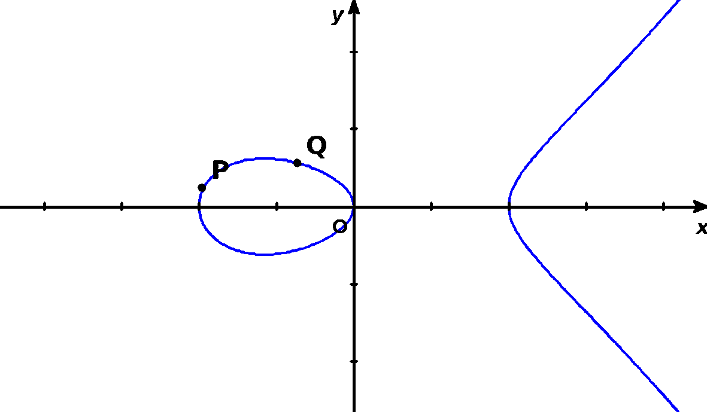
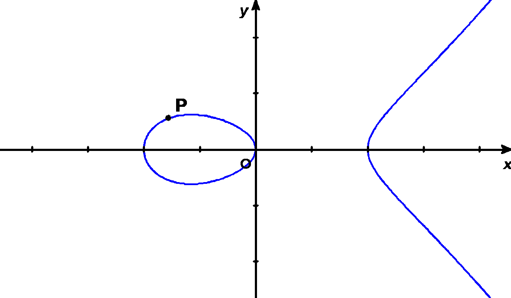

ECMとは
このページでは"ECM"とはどのようなものなのかについて基礎的な解説をしています。プログラムというよりかは理論寄りな部分になります。
ECMとは何？
ECMとは、Elliptic Curve Methodの略です。日本語では楕円曲線法といいます。
楕円曲線法とは、楕円曲線を用いて素因数分解するアルゴリズム(手法)のことです。
楕円曲線 \(y=x^3+ax+b\) のグラフ
私たちは、このECMを用いて素因数分解を行う活動しています。
\(mod\) \(n\) の計算について
それではECMではどのようにして楕円曲線を用いて素因数分解を行うのでしょうか。
ECMでは【\(mod\) \(n\)での計算】と【点同士の二倍算】についての2点が重要になります。
まず\(mod\) \(n\)とは簡単に「\(n\)で割った余り」とイメージしてください。
例えば \(12+7≡4\) \((mod\) \(15)\)は「\(12+7(=19)\)を\(15\)で割った余りは\(4\)となる」と考えます。ECMでは素因数分解をする自然数を\(n\)と設定し、計算をすべて\(mod\) \(n\)上で行います。
座標についても同様です。例えば\((19,31)\)はそれぞれの座標を\(15\)で割るとそれぞれ\(4\)と\(1\)となるので\((19,31)≡(4,1)\) \((mod\) \(15)\)となります。
二倍算について
続いて点同士の二倍算についてです。点同士の二倍算では以下の表現が重要になります。
- 楕円曲線上のある点\(P\),点\(Q\)の通る直線の\(P\),\(Q\)以外の交点を\(P×Q\)と表す。
- 点\(P×Q\)の\(x\)軸対称な点を\(P+Q\)と表す。

ECMでは楕円曲線上にある任意の1点を取って上の操作を行います。ある点\(P\)を通る接線の\(P\)以外の交点は「点\(P\)と点\(P\)以外の交点」と置き換えて考えて\(P×P\)と表し、その点を\(x\)軸対称にした点を\(P+P(=2P)\)とします。(\(2P\)ができるので二倍算といいます。)
一連の流れは以下のようになります。
- 初めに楕円曲線上に適当な点\(P\)を置く。
- 点\(P\)の接線を引く。
- 接線を引くと新たに楕円曲線との交点\(P×P\)ができる。
- 点\(P×P\) の\(x\)軸に対称な点となる\(2P\)をとる。(\(2P=P+P\))
- 生成された点\(2P\)と初めに置いた点\(P\)を直線で結ぶ。
- 直線を引くと新たに楕円曲線との交点\(2P×P\)ができる。
- 点\(2P×P\)のx軸に対称な点となる\(2P+P(=3P)\)とする。
更に工程5~7を繰り返すことによって\(4P\)、\(5P\)、\(6P\)…と点を繰り返し生成することができます。
これが繰り返しできない状態(無限遠点に到達する)になったとき素因数分解が完了します。

よりよいECMを構築するには
FUN-ECMではただ素因数分解をすることが目的ではありません。FUN-ECMの目指す先はより早く、より大きい素因数を見つけられるプログラムを作ることです。そのためには二倍算の計算をより効率的にできるように改善しなければなりません。
次ページでは、なぜこのような改善をFUN-ECMは行うかについての説明をします。